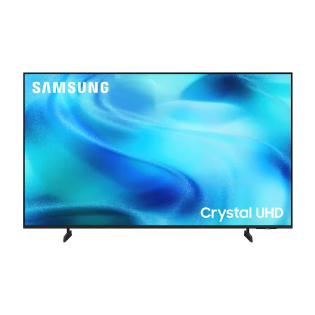
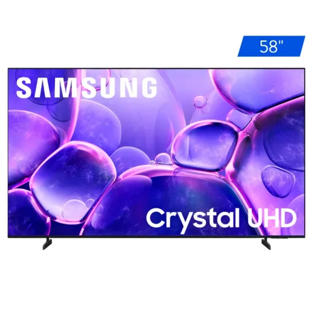

Samsung · Modelo UN55M70HA
Televisor Samsung 55" Mini LED 4K · UN55M70HA
L 11,495
Más barato en Lady Lee · ahorras hasta L 499.99 frente a la tienda más cara
Precio en cada tienda
| Tienda | Precio | Antes | Disponibilidad | |
|---|---|---|---|---|
| Lady Lee | L 11,495 | Disponible | Ver en tienda › | |
| La Curacao | L 11,497 | Disponible | Ver en tienda › | |
| Diunsa | L 11,990 | Disponible | Ver en tienda › | |
| Gallo más Gallo | L 11,994.99 | — | Disponible | Ver en tienda › |
Precios referenciales tomados de cada tienda el 21 de noviembre de 2026. El precio válido es el que muestra la tienda al comprar.
Historial de precio
Lo seguimos desde el 1 de noviembre. Precio más bajo registrado: L 11,495 en Lady Lee (13 de noviembre), igual que hoy. Cambios de precio registrados: 10.
Características
| Color | Azul claro/Plata natural |
|---|---|
| Resolución | 4K UHD |
| Panel | Mini LED |
Descripción
Procesamiento Vision AI
FORMATO DE 5 PULGADAS, CONTRASTE MINI LED SIN RIVAL Y ENTRETENIMIENTO INTELIGENTE
Transforma tu entorno de entretenimiento con la imponente presencia de la pantalla Samsung - Modelo UN55M70HAPXPA de 55 pulgadas. Equipada con la revolucionaria tecnología Mini LED, esta pantalla utiliza miles de luces ultra delgadas controladas por zonas independientes para conseguir contrastes dinámicos asombrosos, negros sumamente profundos y una luminosidad óptima incluso en salas muy iluminadas. Impulsada por la plataforma Samsung Vision AI Smart TV basada en Tizen OS, este modelo optimiza de manera inteligente cada escena mediante algoritmos de autoescalado 4K, brindando transiciones suaves y un ecosistema de aplicaciones veloz. Su sofisticado marco delgado Metal Stream es la combinación ideal entre diseño de vanguardia y rendimiento audiovisual cinematográfico.
Precisión
Otros televisores Samsung
 Televisor Samsung 55" QLED 4K Smart · QN55Q6FAAL 11,994.99En 2 tiendas · más barato en Lady Lee
Televisor Samsung 55" QLED 4K Smart · QN55Q6FAAL 11,994.99En 2 tiendas · más barato en Lady Lee Televisor Samsung 58" LED 4K SmartL 11,994.99En Lady Lee
Televisor Samsung 58" LED 4K SmartL 11,994.99En Lady Lee Televisor Samsung 55" LED 4K · UN55DU7000L 10,995En 2 tiendas · más barato en La Curacao
Televisor Samsung 55" LED 4K · UN55DU7000L 10,995En 2 tiendas · más barato en La Curacao Televisor Samsung 65" LED 4K · UN65U8000HL 11,997En 5 tiendas · más barato en La Curacao
Televisor Samsung 65" LED 4K · UN65U8000HL 11,997En 5 tiendas · más barato en La Curacao Televisor Samsung 55" QLED 4K Smart · QN55Q60DAL 10,990En Diunsa
Televisor Samsung 55" QLED 4K Smart · QN55Q60DAL 10,990En Diunsa Televisor Samsung 65" LED 4K · UN65U8000FL 12,499En 3 tiendas · más barato en Elektra
Televisor Samsung 65" LED 4K · UN65U8000FL 12,499En 3 tiendas · más barato en Elektra
Televisor Samsung 58" LED 4K Smart · UN58U8000HL 10,490En 3 tiendas · más barato en Diunsa
Televisor Samsung 58" LED 4K Smart · UN58U8000FL 10,297En 6 tiendas · más barato en RadioShack